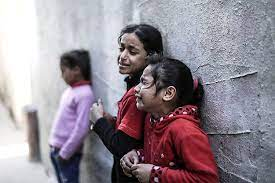

Depuis un demi-siècle, l’occupation israélienne de la Cisjordanie (y compris de Jérusalem-Est) et de la bande de Gaza entraîne des violations systématiques des droits humains des Palestiniens vivant dans ces zones.
Depuis le début de l’occupation en juin 1967, les politiques impitoyables de confiscation des terres, de colonisation illégale et d’expropriation menées par Israël, associées à la discrimination omniprésente, ont causé d’immenses souffrances aux Palestiniens et les ont privés de leurs droits fondamentaux.
Le régime militaire d’Israël bouleverse tous les aspects de la vie quotidienne dans les territoires palestiniens occupés. Pour les Palestiniens, c’est toujours ce régime militaire qui détermine s’ils peuvent, quand ils peuvent et comment ils peuvent se déplacer pour aller travailler ou à l’école, se rendre à l’étranger, rendre visite à leurs proches, gagner leur vie, participer à une manifestation, accéder à leurs terres agricoles ou même avoir accès à l’électricité ou à une source d’eau potable. Cela entraîne une humiliation, une peur et une oppression quotidiennes. Israël a de fait pris en otage la vie de ces personnes.
Le pays a également adopté un ensemble complexe de lois militaires destinées à étouffer la critique de ses politiques, et des hauts responsables du gouvernement ont qualifié de « traîtres » les Israéliens faisant campagne pour les droits des Palestiniens.

Cela fait 50 ans qu’Israël expulse de force des milliers de Palestiniens de leurs terres, qu’il les occupe et les utilise de manière illégale pour créer des colonies dans lesquelles vivent exclusivement des colons juifs israéliens
.
communautés palestiniennes entières ont été déplacées par ces colonies. Leurs maisons et leurs moyens de subsistance ont été détruits, et ils doivent subir des restrictions à leur liberté de mouvement, et à l’accès à leurs propres terres, eau et autres ressources naturelles. Les communautés ont également été violemment attaquées par les soldats et les colons israéliens. Nous devons agir maintenant
Une semaine après l’attaque du Hamas, les frappes de l’armée israélienne sur Gaza se poursuivent. La guerre a déjà fait plus de 3 000 morts et 500 000 déplacés
Des milliers de Palestiniens fuient à travers les rues dévastées de la ville de Gaza, espérant trouver refuge plus au sud suite à une injonction d'Israël, qui se prépare à une offensive terrestre en représailles à l'attaque sanglante lancée par le Hamas.
"Ce n'est que le début" des opérations israéliennes à Gaza, a prévenu vendredi le Premier ministre Benjamin Netanyahu au septième jour de la guerre, déclenchée par l'attaque du mouvement islamiste palestinien contre Israël et qui a déjà fait des milliers de morts. Le Hamas a en outre enlevé 150 otages qu'il a menacé d'exécuter.
L'armée israélienne, qui a riposté par des frappes intensives sur la bande de Gaza, a aussi annoncé vendredi y avoir également mené des incursions au sol